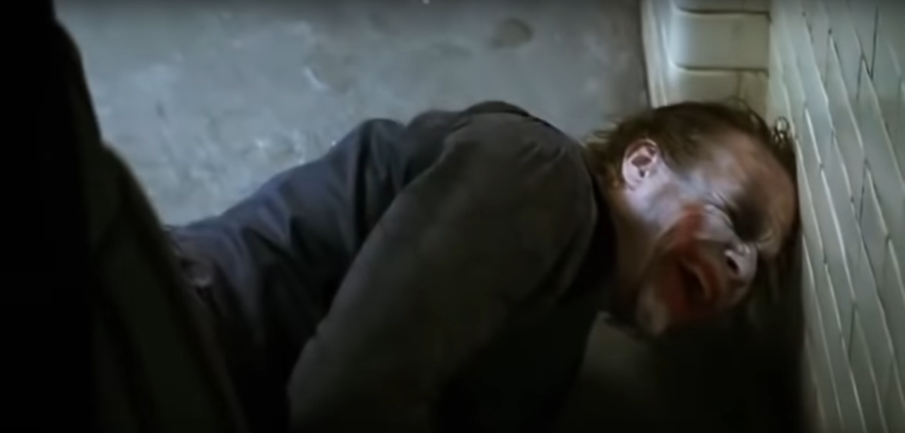

1) Хит хотел роль Бэтмена
Изначально при прослушивании, он, как и многие хотел получить роль Бэтмена, но ему предложили Джокера, с которой он справился великолепно! В итоге он заслужено получил за неё самую престижную награду в кинематографе – «Оскар».
2) Изображённый им Джокер ужасал его коллег по фильму
Леджер блестяще показал психически неуравновешенную сторону Джокера. Майкл Кейн, исполнивший роль Альфреда в «Тёмном рыцаре» рассказал однажды в интервью, что никогда не видел лучшего исполнения роли. Игра Леджера испугала его до ужаса. А это пожалуй лучший комплемент для актёра.
3) Первый актёр, получивший «Оскар» за роль кинозлодея
Супер-геройские фильмы не получают «Оскара» за исполнение ролей, так как эта награда достаётся за роли в фильмах с сильным посылом. Поэтому никто и не ждал, что Хит получит награду за роль Джокера. Примечательно, что он второй в истории актёр, получивший эту награду за лучшую актёрскую игру посмертно.
4) Он закрылся от всех, готовясь к этой роли
Хит изолировал себя от мира на какое-то время, пытаясь полностью вжиться в роль психопата. Он ни с кем не общался и полностью погрузился в мир сумасшедшего.
5) Нашёл вдохновение в «Заводном апельсине»
В 70-е годы, когда вышел это фильм, он вызвал много критики, и в то же время восхищение за своё безумие. Хит использовал те же приёмы, что актёры «апельсина» что бы в большей степени передать это безумие.
6) Он хотел, чтобы Бэтмен его избил по-настоящему
В «Тёмном рыцаре» была сцена, где Бэтмен (Кристиан Бейл) допрашивал Джокера, а потом его избивает. Хит хотел, чтобы эта сцена выглядела максимально реалистично, поэтому попросил Кристиана бить его по-настоящему, что позволило и самому Хиту показать настоящие эмоции.
7) Дневник Джокера
Во время съёмок фильма, Хит постоянно оставался в образе и даже вёл дневник от имени кинозлодея, делал там какие-то записи и постоянно что-то бормотал. Некоторые его коллеги относились настороженно к такому поведение, а когда прочитали дневник, и вовсе подумали, что Хит начал сходить сума.
8) Хит любил импровизировать
Во время съёмок фильма, Хит постоянно оставался в образе и даже вёл дневник от имени кинозлодея, делал там какие-то записи и постоянно что-то бормотал. Некоторые его коллеги относились настороженно к такому поведение, а когда прочитали дневник, и вовсе подумали, что Хит начал сходить сума.
9) Сам себе наносил грим
Конечно же на съёмочной площадке был штатный гримёр, но Хит отказался от его услуг и наносил грим самостоятельно. Он хотел, чтобы его грим на лице его героя выглядел так, будто его наносил на самом деле психопат, а не профессионал.
10) У него была улыбка Глазго
При создании образа Джокера, Хит использовал улыбку Глазго. Это была знаменитая английская банда, которая разрезали рты своих жертв от уха до уха, что стало их отличительным почерком